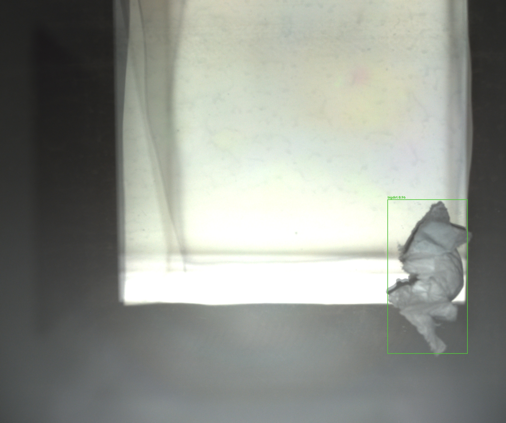

Cleaning Robot Perception
From visual detections to a reusable ROS 2 perception component.
Loading the 2D scene…
Detection example
VALIDATION IMAGE
Actual output from the project's original ONNX detector. The box is a model prediction, not a manual ground-truth annotation.
View full-resolution image ↗